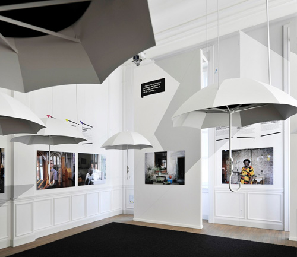
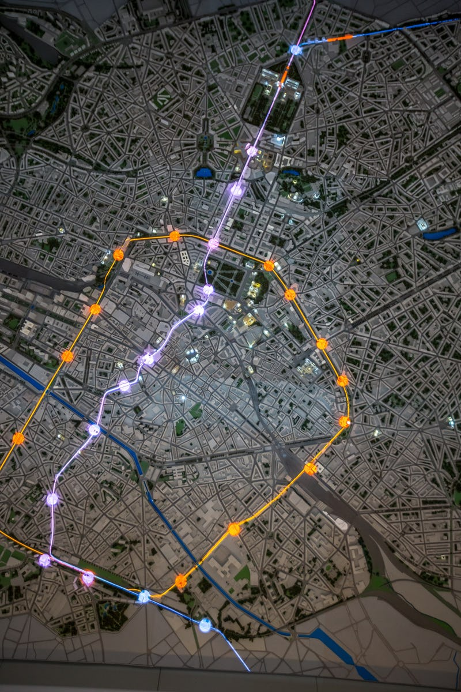

Exposition : Experience.Brussels
Présentation de l'exposition : Experience.Brussels.
Visite du 9 janvier, à Experience.Brussels! situé 4, Rue Royale à 1000 Bruxelles
Ce n’est pas le genre d’endroit que j’aurais été visiter par moi-même. Hélas je manque un peu de curiosité quand il s’agit d’histoire. Et puis j’ai l’impression que quand on vit dans une grande ville, depuis toujours, on a tendance à moins s’y intéresser.
Faire cette visite a été bien plus intéressant que je l’avais imaginé, elle est faite de façon ludique et interactive, les animations sont différentes dans chaque salle, j’ai pu y redécouvrir plein de choses.
Le jeu de piste nous a permis de traverser toutes les salles, et de lire ou voir des films sur son histoire.
Celle que j’ai le plus appréciée c’est la ‘’Homo bruxellensis’’ avec ses grands parapluies qui ont chacun une histoire différente à raconter sur leur façon de voir BXL et ce qui les a poussés à venir y vivre.
Faire équipe avec 2 autres stagiaires de la formation nous a permis de nous connaitre davantage. Nous avons passé un bon moment. On a fini 2e quand même…
Après ça nous avons été visionner un petit film sur l’histoire de la ville qui mettait la maquette en avant aussi. Et il faut dire que c’est bien foutu !
 